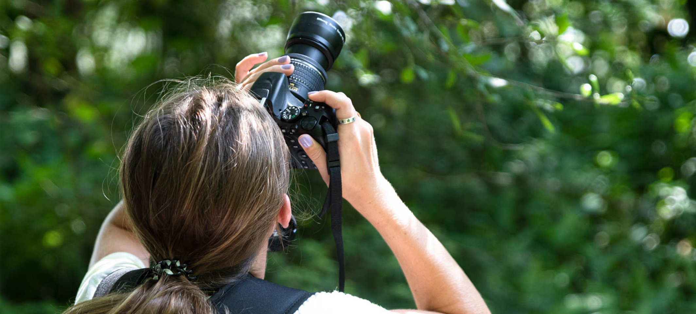
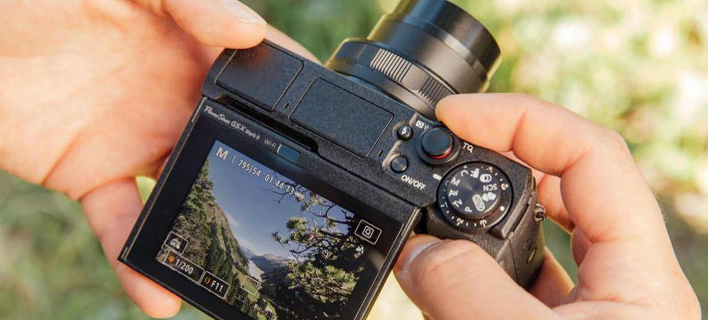

กล้องมียี่ห้ออะไรบ้างในตลาด
10 Oct 2019
ในตลาดการแข่งขันกล้องตอนนี้ถือได้ว่ากำลังครุกรุ่นกันอยู่เลยก็ว่าได้ เพราะราคากล้องนั้นหลาย ๆ คนเริ่มจับต้องได้กันมากขึ้นกว่าแต่ก่อน ตั้งแต่ต่ำกว่าหมื่นจนไปถึงระดับมืออาชีพหลายแสน แต่สิ่งหนึ่งนอกจากราคาและคาแรคเตอร์ของไฟล์ภาพของกล้องแล้วเชื่อได้ว่าหลาย ๆ คนเมื่อจะเลือกซื้อกล้องจะต้องนึกถึงแบรนด์ก่อนเป็นอันดับแรก เพราะชื่อแบรนด์ถือได้ว่าเป็นใบประกันอย่างหนึ่งเลยก็ว่าได้ ว่ากล้องตัวนั้นน่าเชื่อถือในด้านความคุ้มค่าและประสิทธิภาพมากน้อยเพียงใดถ้าเราถอยกล้องของแบรนด์นั้นมา ดังนั้นในวันนี้เราจะพาเพื่อน ๆ ไปทำความรู้จัดคร่าว ๆ เกี่ยวกับแบรนด์กล้องที่เป็นที่นิยมในตลาดในตอนนี้กันแบบเร็ว ๆ กันครับ
1. Canon
ในตลาดการแข่งขันกล้องตอนนี้ถือได้ว่ากำลังครุกรุ่นกันอยู่เลยก็ว่าได้ เพราะราคากล้องนั้นหลาย ๆ คนเริ่มจับต้องได้กันมากขึ้นกว่าแต่ก่อน ตั้งแต่ต่ำกว่าหมื่นจนไปถึงระดับมืออาชีพหลายแสน แต่สิ่งหนึ่งนอกจากราคาและคาแรคเตอร์ของไฟล์ภาพของกล้องแล้วเชื่อได้ว่าหลาย ๆ คนเมื่อจะเลือกซื้อกล้องจะต้องนึกถึงแบรนด์ก่อนเป็นอันดับแรก เพราะชื่อแบรนด์ถือได้ว่าเป็นใบประกันอย่างหนึ่งเลยก็ว่าได้ ว่ากล้องตัวนั้นน่าเชื่อถือในด้านความคุ้มค่าและประสิทธิภาพมากน้อยเพียงใดถ้าเราถอยกล้องของแบรนด์นั้นมา ดังนั้นในวันนี้เราจะพาเพื่อน ๆ ไปทำความรู้จัดคร่าว ๆ เกี่ยวกับแบรนด์กล้องที่เป็นที่นิยมในตลาดในตอนนี้กันแบบเร็ว ๆ กันครับ
2. Nikon
นิคอน คอร์ปอเรชัน เดิมชื่อ นิปปง โคงะกุ โคเงียว (Nippon Kōgaku Kōgyō) หรือชื่อในภาษาอังกฤษว่า Japan Optical Co ก่อตั้งเมื่อ 25 กรกฎาคม พ.ศ. 2460 หรือเมื่อ ร้อยกว่าปีที่แล้ว โดยผลิตเลนส์ และกล้องจุลทรรศน์ กล้องโทรทัศน์ Nippon Kōgaku Kōgyō แปลเป็นไทยได้ว่า บริษัท อุตสาหกรรมเลนส์และกล้องถ่ายรูปแห่งประเทศญี่ปุ่น และย่อเหลือ Nikko ซึ่งแปลว่า แสงอาทิตย์ Nikkor เอา R มาต่อท้าย Nikko เป็นชื่อรุ่นของเลนส์ เริ่มแรก Nikon สร้างเลนส์ให้บริษัทแคนอน และได้รับความนิยมไปจนถึงผลิตเลนส์ให้ Leica
3. Sony
เมื่อ กรกฎาคม ปี 2005 ทาง Konica Minolta และ ทาง Sony ได้ทำการตกลงร่วมกันที่จะพัฒนากล้องดิจิตอล SLR ข้อตกลงนั้นทำให้เกิดการใช้เทคโนโลยีร่วมกันระหว่างทั้งสองบริษัท เช่น auto focus, metering, anti-shak, ฯลฯ หลังจากนั้น 6 เดือนทาง Konica Minolta ได้ประกาศถอนตัวออกจากธุรกิจกล้องดิจิตอล และโอนถ่ายกล้องและอุปกรณ์รวมทั้ง Maxxum/Dynax lens mount และ เทคโนโลยีที่เกี่ยวข้องกับกล้อง SLR ไปให้ทาง Sony จัดการ หลังจากนั้นอีกหนึ่งปีเราก็ได้สัมผัสกับกล้อง Sony Alph DSLR – A100 ซึ่งเป็นกล้อง compact และมีความละเอียด 10 ล้านพิกเซล ซึ่งมี Konica Minolta lens mount ติดตั้งอยู่ รวมทั้งระบบ Ani-shake ที่ตอนนี้เปลี่ยนไปเรียกว่า Super SteadyShot จึงสามารถพูดได้ว่ากล้องตัวนี้มีการใช้เทคโนโลยีของทั้งสองค่าย นอกจากนี้ทาง Sony เองก็มีการปรับปรุงพัฒนากล้องให้มีรูปลักษณ์ภายนอกที่สวยงามยิ่งขึ้น และสายการผลิตที่มีมาตรฐานมากยิ่งขึ้น ตัว lens mount นั้นก็เปลี่ยนชื่อเป็น Alpha mount ซึ่งทาง Sony ได้ทำการเปิดตัว lens ต่าง ๆ มากถึง 19 แบบ ที่สามารถนำมาใช้ร่วมกับกล้อง Sony Alpha ได้
4. Olympus
Olympus ถูกก่อตั้งขึ้นเป็นครั้งแรกเมื่อ 12 ตุลาคม ปี ค.ศ. 1919 ที่กรุงโตเกียว โดยใช้ชื่อว่า K.K. Takachiho Seisakusho (Takachiho Work Co., Ltd.) โดย ยามาชิตะ ทาเคชิ อดีตพนักงานบริษัทเงินทุนสำหรับธุรกิจใหม่ โดยได้ร่วมงานกับวิศวกรผู้บริหารที่ชื่อว่า เทราดะ ชินทาโร่ ซึ่งเคยทำงานอยู่ในบริษัทผู้ผลิตกล้องจุลทรรศน์และเทอร์โมมิเตอร์ ซึ่งในช่วงเวลานั้นประเทศญี่ปุ่นต้องนำเข้าเทคโนโลยีกล้องจุลทรรศน์จาก เยอรมันเป็นหลัก ซึ่งบริษัทที่จัดตั้งขึ้นใหม่นี้มีความปราถนาอย่างแรงกล้าที่จะเอาชนะบริษัท ซึ่งทำการนำเข้าอุปกรณ์ชนิดนี้ให้ได้ บริษัทได้เปิดตัวกล้องของตนเองรุ่นแรกอย่างเป็นทางการคือ Semi-Olympus I ในปี ค.ศ. 1936 ด้วยการประกาศเป็นคู่แข่งกับ Contax และ Ikonta จากเยอรมันแบบเต็มตัว ซึ่งก็ตามมาด้วยกล้องรุ่น Semi Olympus II แต่แววแห่งการเป็นผู้นำเทรนด์ทางด้านการถ่ายภาพยุคใหม่ของโอลิมปัสนั้นเริ่ม ขึ้นในปี ค.ศ. 1959 ด้วยการประกาศเปิดตัว Olympus PEN ซึ่งใช้พื้นที่บนฟิล์มด้วยขนาด 18 x 24 mm (Half Frame) ทำให้สามารถบันทึกภาพได้ถึง 72 ภาพด้วยม้วนฟิล์ม 36 ภาพมาตรฐานที่ใช้กันอยู่โดยปกติ ซึ่งด้วยเทคนิคการออกแบบลักษณะนี้ทำให้มันเป็นกล้องที่มีขนาดเล็กและใช้งาน สะดวกที่สุดในขณะนั้น ก่อนหน้า Semi Olympus I นั้น Olympus ได้ออกแบบและผลิตกล้องรุ่น Olympus Standard มาก่อนแล้ว แต่ด้วยเหตุผลความจำเป็นทางด้านสงครามกับจีนในขณะนั้นทำให้กองทัพต้องการให้ บริษัทผลิตเครื่องมือตัวอื่นเพื่อใช้ในการทำสงครามมากกว่า และด้วยทรัพยากรและบุคลากรที่ไม่เพียงพอ โครงการผลิต Olympus Standard จึงต้องยุติลงกลางคัน มีเพียงต้นแบบจำนวน 10 ตัว (หมายเลขประจำตัวกล้อง 101 – 110) ที่ถูกผลิตออกมาสำเร็จไปก่อนหน้าเพียงเท่านั้น

5. Pentax
ก่อตั้งขึ้นครั้งแรกเมื่อเดือนพฤศจิกายน ปี ค.ศ. 1919 โดย คุมาโอะ คาจิวาร่า
ภายใต้ชื่อ Asahi Kogaku Kogyo Goshi Kaisha ที่บริเวณชานเมืองโตเกียวเพื่อผลิตงานทางด้านออพติคโดยเฉพาะ
ผลงานในช่วงแรกของบริษัทนั้นได้แก่เลนส์สำหรับแว่นตาชนิดต่าง ๆ ภายใต้แบรนด์ Aoco ในปี ค.ศ. 1923
(ซึ่งยังคงผลิตอยู่จนถึงปัจจุบัน) ต่อมาในปี ค.ศ. 1938 ได้เปลี่ยนชื่อบริษัทเป็น Asahi Optical Co., Ltd.
และได้เริ่มการผลิตเลนส์เพื่อใช้ในการถ่ายภาพทั้งภาพนิ่งและภาพยนตร์ตั้งแต่ นั้นเป็นต้นมา
ในช่วงระหว่างสงครามโลกครั้งที่สอง
บริษัทได้อุทิศตนทุ่มเททรัพยากรสำหรับสนับสนุนกองกำลังทางทหารอย่างแข็งขัน
โดยร่วมผลิตอุปกรณ์และเครื่องมือทางออพติคชนิดต่าง ๆ สำหรับใช้งานในกองทัพ หลังจากที่สงครามสิ้นสุดลง บริษัท
Asahi Optical ได้ยุติกิจการทั้งหมดลงเนื่องจากความเสียหายที่เกิดขึ้น แต่หลังจากนั้นในปี ค.ศ. 1948
ก็ได้เปิดกิจการขึ้นใหม่อีกครั้งโดยการนำโครงการต่างๆ ก่อนสงครามขึ้นมาทำใหม่
ซึ่งหนึ่งในนั้นก็คือการผลิตเลนส์สำหรับกล้องถ่ายภาพให้กับ Konishiroku และ Chiyoda Kogaku Seiko หรือ
Konica และ Minolta ในปัจจุบัน
ปี ค.ศ. 1952 กล้องตัวแรกของ Asahi ได้ปรากฏตัวขึ้นในชื่อรุ่น Asahiflex ซึ่งมันรั้งตำแหน่งกล้อง SLR
ตัวแรกของญี่ปุ่นด้วย ส่วนชื่อ “Pentax” นั้นเดิมทีเป็นชื่อเครื่องหมายการค้าของ East German VEB Zeiss Ikon
ซึ่งเกิดจากการรวมกันของ “Pentaprism” (ปริซึมห้าเหลี่ยมที่ใช้ในระบบช่องมองภาพของกล้อง SLR) และ “Contax”
ซึ่งต่อมาในภายหลังได้ขายชื่อนี้ให้กับ Asahi Optical ในปี ค.ศ. 1957
หลังจากนั้นทิศทางในการผลิตอุปกรณ์และกล้องเพื่อการถ่ายภาพของบริษัทก็
ชัดเจนมากยิ่งขึ้นจนถึงกับส่งออกผลิตภัณฑ์ไปจำหน่ายยังอเมริกา ในระหว่างนั้น Asahi ได้ใช้บริการของบริษัท
Honeywell Corporation สำหรับการดำเนินการเป็นตัวแทนจำหน่าย
ซึ่งฉลากของผลิตภัณฑ์ในช่วงการขนส่งที่ติดไปกับหีบห่อนั้นใช้ชื่อว่า Honeywell Pentax (แทนที่จะเป็น Asahi
Pentax) ผลปรากฏว่าชื่อ Honeywell กลายเป็นที่รับรู้กันทั่วไปมากกว่าPentax เสียอีก